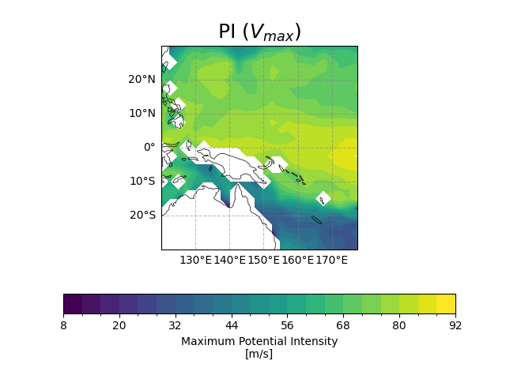
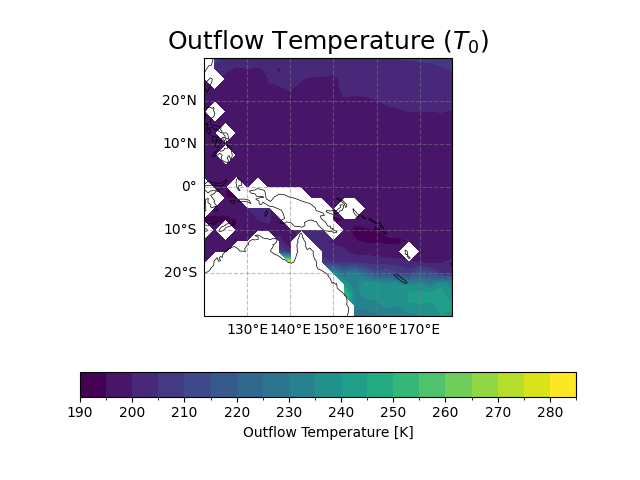
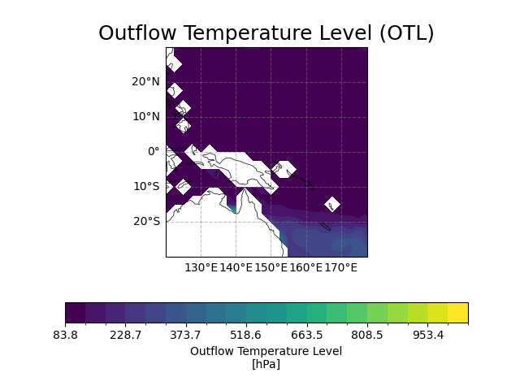
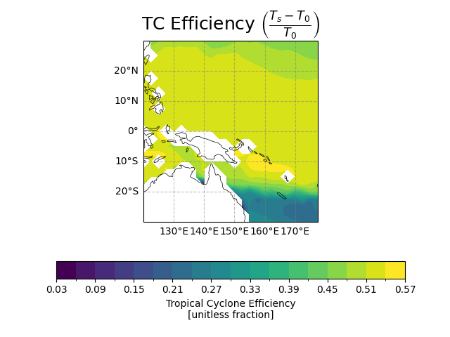
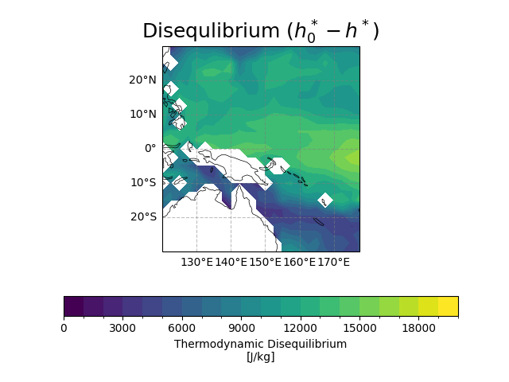

Note
Go to the end to download the full example code.
Potential Intensity for Typhoon#
Before proceeding with all the steps, first import some necessary libraries and packages
import xarray as xr
import cartopy.crs as ccrs
import easyclimate as ecl
Now open the sample dataset
ds = xr.open_dataset('tcpi_sample_data.nc')
ds
<xarray.Dataset> Size: 337kB
Dimensions: (level: 31, lat: 25, lon: 24)
Coordinates:
* level (level) float64 248B 1e+03 975.0 950.0 925.0 ... 30.0 20.0 10.0
* lat (lat) float64 200B -30.0 -27.5 -25.0 -22.5 ... 22.5 25.0 27.5 30.0
* lon (lon) float64 192B 120.0 122.5 125.0 127.5 ... 172.5 175.0 177.5
month float64 8B ...
Data variables:
lsm (lat, lon) float64 5kB ...
sst (lat, lon) float64 5kB ...
msl (lat, lon) float64 5kB ...
t (level, lat, lon) float64 149kB ...
q (level, lat, lon) float64 149kB ...
Vmax (lat, lon) float64 5kB ...
To (lat, lon) float64 5kB ...
Pmin (lat, lon) float64 5kB ...
LNB (lat, lon) float64 5kB ...
PI_flag (lat, lon) float64 5kB ...xarray.Dataset
- level: 31
- lat: 25
- lon: 24
- level(level)float641e+03 975.0 950.0 ... 20.0 10.0
- standard_name :
- Atmospheric Pressure
- units :
- hPa
array([1000., 975., 950., 925., 900., 875., 850., 825., 800., 775., 750., 725., 700., 650., 600., 550., 500., 450., 400., 350., 300., 250., 200., 150., 100., 70., 50., 40., 30., 20., 10.]) - lat(lat)float64-30.0 -27.5 -25.0 ... 27.5 30.0
- standard_name :
- Latitude
- units :
- degrees
array([-30. , -27.5, -25. , -22.5, -20. , -17.5, -15. , -12.5, -10. , -7.5, -5. , -2.5, 0. , 2.5, 5. , 7.5, 10. , 12.5, 15. , 17.5, 20. , 22.5, 25. , 27.5, 30. ]) - lon(lon)float64120.0 122.5 125.0 ... 175.0 177.5
- standard_name :
- Longitude
- units :
- degrees
array([120. , 122.5, 125. , 127.5, 130. , 132.5, 135. , 137.5, 140. , 142.5, 145. , 147.5, 150. , 152.5, 155. , 157.5, 160. , 162.5, 165. , 167.5, 170. , 172.5, 175. , 177.5]) - month()float64...
- standard_name :
- Month
- units :
- Month Number
[1 values with dtype=float64]
- lsm(lat, lon)float64...
- standard_name :
- ERA-I Land-sea Mask
- units :
- 0=Ocean, 1=Land
[600 values with dtype=float64]
- sst(lat, lon)float64...
- standard_name :
- Sea Surface Temperature
- units :
- degrees C
[600 values with dtype=float64]
- msl(lat, lon)float64...
- standard_name :
- Mean Sea Level Pressure
- units :
- hPa
[600 values with dtype=float64]
- t(level, lat, lon)float64...
- standard_name :
- Atmospheric Temperature
- units :
- degrees C
[18600 values with dtype=float64]
- q(level, lat, lon)float64...
- standard_name :
- Specific Humidity
- units :
- g/kg
[18600 values with dtype=float64]
- Vmax(lat, lon)float64...
- standard_name :
- Maximum Potential Intensity
- units :
- m/s
[600 values with dtype=float64]
- To(lat, lon)float64...
- standard_name :
- Outflow Temperature
- units :
- kelvin
[600 values with dtype=float64]
- Pmin(lat, lon)float64...
- standard_name :
- Minimum Central Pressure
- units :
- hPa
[600 values with dtype=float64]
- LNB(lat, lon)float64...
- standard_name :
- Level of Neutral Bouyancy for a Parcel Reversibly Lifted from Sea Level
- units :
- hPa
[600 values with dtype=float64]
- PI_flag(lat, lon)float64...
- standard_name :
- Flag for BE02 algorithm
[600 values with dtype=float64]
- levelPandasIndex
PandasIndex(Index([1000.0, 975.0, 950.0, 925.0, 900.0, 875.0, 850.0, 825.0, 800.0, 775.0, 750.0, 725.0, 700.0, 650.0, 600.0, 550.0, 500.0, 450.0, 400.0, 350.0, 300.0, 250.0, 200.0, 150.0, 100.0, 70.0, 50.0, 40.0, 30.0, 20.0, 10.0], dtype='float64', name='level')) - latPandasIndex
PandasIndex(Index([-30.0, -27.5, -25.0, -22.5, -20.0, -17.5, -15.0, -12.5, -10.0, -7.5, -5.0, -2.5, 0.0, 2.5, 5.0, 7.5, 10.0, 12.5, 15.0, 17.5, 20.0, 22.5, 25.0, 27.5, 30.0], dtype='float64', name='lat')) - lonPandasIndex
PandasIndex(Index([120.0, 122.5, 125.0, 127.5, 130.0, 132.5, 135.0, 137.5, 140.0, 142.5, 145.0, 147.5, 150.0, 152.5, 155.0, 157.5, 160.0, 162.5, 165.0, 167.5, 170.0, 172.5, 175.0, 177.5], dtype='float64', name='lon'))
And then we use easyclimate.field.typhoon.calc_potential_intensity_Bister_Emanuel_2002 to calculate relative variables about potential intensity for typhoon
pi_result = ecl.field.typhoon.calc_potential_intensity_Bister_Emanuel_2002(
sst_data = ds.sst,
sst_data_units = 'degC',
surface_pressure_data = ds.msl,
surface_pressure_data_units = 'hPa',
temperature_data = ds.t,
temperature_data_units = 'degC',
specific_humidity_data = ds.q,
specific_humidity_data_units = 'g/kg',
vertical_dim = 'level',
vertical_dim_units = 'hPa'
)
pi_result
<xarray.Dataset> Size: 53kB
Dimensions: (lat: 25, lon: 24)
Coordinates:
* lat (lat) float64 200B -30.0 -27.5 -25.0 -22.5 ... 22.5 25.0 27.5 30.0
* lon (lon) float64 192B 120.0 122.5 125.0 127.5 ... 172.5 175.0 177.5
month float64 8B 7.0
Data variables:
vmax (lat, lon) float64 5kB nan nan nan nan ... 60.45 62.24 59.74 58.18
pmin (lat, lon) float64 5kB nan nan nan nan ... 960.9 955.9 961.3 965.2
ifl (lat, lon) int64 5kB 0 0 0 0 0 0 0 0 0 0 0 ... 1 1 1 1 1 1 1 1 1 1
t0 (lat, lon) float64 5kB nan nan nan nan ... 205.4 205.5 205.8 205.9
otl (lat, lon) float64 5kB nan nan nan nan ... 131.7 129.7 133.3 135.8
eff (lat, lon) float64 5kB nan nan nan nan ... 0.4602 0.4566 0.4543
diseq (lat, lon) float64 5kB nan nan nan ... 8.685e+03 8.279e+03
lnpi (lat, lon) float64 5kB nan nan nan nan ... 8.204 8.262 8.18 8.127
lneff (lat, lon) float64 5kB nan nan nan nan ... -0.7761 -0.784 -0.789
lndiseq (lat, lon) float64 5kB nan nan nan nan ... 9.086 9.144 9.069 9.021
lnCKCD (lat, lon) float64 5kB -0.1054 -0.1054 -0.1054 ... -0.1054 -0.1054xarray.Dataset
- lat: 25
- lon: 24
- lat(lat)float64-30.0 -27.5 -25.0 ... 27.5 30.0
- standard_name :
- Latitude
- units :
- degrees
array([-30. , -27.5, -25. , -22.5, -20. , -17.5, -15. , -12.5, -10. , -7.5, -5. , -2.5, 0. , 2.5, 5. , 7.5, 10. , 12.5, 15. , 17.5, 20. , 22.5, 25. , 27.5, 30. ]) - lon(lon)float64120.0 122.5 125.0 ... 175.0 177.5
- standard_name :
- Longitude
- units :
- degrees
array([120. , 122.5, 125. , 127.5, 130. , 132.5, 135. , 137.5, 140. , 142.5, 145. , 147.5, 150. , 152.5, 155. , 157.5, 160. , 162.5, 165. , 167.5, 170. , 172.5, 175. , 177.5]) - month()float647.0
- standard_name :
- Month
- units :
- Month Number
array(7.)
- vmax(lat, lon)float64nan nan nan ... 62.24 59.74 58.18
- standard_name :
- Maximum Potential Intensity
- units :
- m/s
array([[ nan, nan, nan, nan, nan, nan, nan, nan, nan, nan, nan, nan, nan, nan, 51.55715059, 52.88026977, 48.93733222, 44.51247947, 40.12485718, 38.54270386, 34.16907451, 32.1201904 , 28.12658676, 32.84643081], [ nan, nan, nan, nan, nan, nan, nan, nan, nan, nan, nan, nan, nan, nan, 45.20101351, 46.72655026, 43.76272222, 38.16424196, 41.93219936, 33.03166999, 33.14889546, 34.64127866, 30.29654882, 31.37097446], [ nan, nan, nan, nan, nan, nan, nan, nan, nan, nan, nan, nan, nan, 18.0192888 , 42.89101827, 38.94007362, 38.22929676, 37.88428646, 38.21075984, 33.06814953, 30.61729164, 30.41351387, 29.96716888, 36.47215136], [ nan, nan, nan, nan, nan, nan, nan, nan, nan, nan, nan, nan, nan, 32.92366083, 38.0447913 , 32.26798812, 33.76765748, 34.17761441, 34.4398341 , 34.41105229, 32.90069367, 36.5670213 , 28.96721553, 31.69268234], ... [67.04731781, 62.65919436, 68.39560744, 68.79986277, 74.9597218 , 78.82363417, 78.83383263, 77.48548495, 78.35810398, 65.25095442, 70.01274632, 73.06126398, 72.9837154 , 76.5757775 , 75.80518708, 75.79107298, 74.39012704, 74.41302486, 74.7595616 , 72.14427215, 71.64489418, 68.23229054, 71.27237207, 71.65779585], [47.34585326, nan, 64.63479856, 69.72115774, 73.34124604, 72.51126025, 75.23188947, 76.33679305, 77.39054496, 61.27814743, 69.87240665, 72.66018857, 73.58056643, 75.67376784, 75.96566488, 72.96962951, 71.74133933, 71.20745271, 70.27269347, 73.50852641, 70.15290739, 66.78632566, 65.82071491, 67.08070681], [ nan, 50.67596383, 57.09996973, 66.56776752, 69.6996489 , 67.46348452, 70.32359898, 68.1779849 , 59.75748837, 52.14681665, 55.52966961, 59.93472263, 70.21695052, 69.39187083, 73.11929395, 74.04767955, 67.1173661 , 65.72797083, 64.97266246, 69.50613252, 65.59813223, 65.72801989, 66.82621307, 64.11083638], [ nan, 28.84520871, 48.78716189, 57.41853967, 61.73203941, 61.34528251, 58.46861831, 56.88422136, 51.22691583, 49.39400003, 50.47160743, 51.58574672, 58.01358534, 61.27934813, 57.08614489, 65.21166933, 65.5308368 , 63.96099536, 58.13573488, 58.86037938, 60.45203798, 62.23992236, 59.74111956, 58.18176019]]) - pmin(lat, lon)float64nan nan nan ... 955.9 961.3 965.2
- standard_name :
- Minimum Central Pressure
- units :
- hPa
array([[ nan, nan, nan, nan, nan, nan, nan, nan, nan, nan, nan, nan, nan, nan, 982.74680409, 979.96322203, 985.46568737, 991.10928227, 996.15069278, 997.72545079, 1001.9276898 , 1003.60332648, 1006.86092228, 1002.71898687], [ nan, nan, nan, nan, nan, nan, nan, nan, nan, nan, nan, nan, nan, nan, 991.60394396, 989.08091186, 992.46449073, 998.48930081, 994.08914519, 1003.05890146, 1002.79412574, 1001.0890152 , 1004.99000967, 1004.09224204], [ nan, nan, nan, nan, nan, nan, nan, nan, nan, nan, nan, nan, nan, 1015.7419031 , 994.05657841, 998.19367731, 998.55524868, 998.49040329, 997.78078542, 1002.52031375, 1004.43483797, 1004.43403197, 1004.84515434, 998.79178747], [ nan, nan, nan, nan, nan, nan, nan, nan, ... 911.84858512, 912.97515073, 912.60909889, 920.06826622, 922.10752644, 932.34289364, 925.74463991, 925.91076861], [ 965.49138685, nan, 932.46157288, 921.26648481, 912.64717057, 915.66312932, 908.06991156, 905.36903148, 903.3233473 , 948.15438746, 927.91374832, 919.45733462, 914.88888508, 909.55833542, 908.37313106, 917.07511771, 922.0857792 , 923.95151766, 926.59372017, 918.81599648, 927.75260145, 937.68920509, 941.56005429, 940.37067012], [ nan, 960.80981532, 950.29353947, 929.67615559, 922.43643494, 928.22398616, 921.20520543, 927.40104793, 948.7606645 , 966.64931809, 964.97782774, 959.37571888, 934.41227105, 932.68245847, 921.44949119, 919.66429566, 937.4853828 , 941.58437647, 944.4418407 , 932.93980906, 942.05488484, 942.45895384, 941.19496417, 949.03231539], [ nan, 993.94396876, 966.17118646, 951.28455765, 941.8102231 , 941.66570091, 948.65876406, 952.56779757, 965.69973044, 976.3533754 , 976.42497381, 975.65262884, 966.06904955, 959.44298577, 967.44164763, 952.97906074, 951.45288177, 954.49101287, 967.01798472, 964.73845421, 960.87829222, 955.88944138, 961.25873899, 965.15621671]]) - ifl(lat, lon)int640 0 0 0 0 0 0 0 ... 1 1 1 1 1 1 1 1
- standard_name :
- pyPI Flag
- units :
- celsius
array([[0, 0, 0, 0, 0, 0, 0, 0, 0, 0, 0, 0, 0, 0, 1, 1, 1, 1, 1, 1, 1, 1, 1, 1], [0, 0, 0, 0, 0, 0, 0, 0, 0, 0, 0, 0, 0, 0, 1, 1, 1, 1, 1, 1, 1, 1, 1, 1], [0, 0, 0, 0, 0, 0, 0, 0, 0, 0, 0, 0, 0, 1, 1, 1, 1, 1, 1, 1, 1, 1, 1, 1], [0, 0, 0, 0, 0, 0, 0, 0, 0, 0, 0, 0, 0, 1, 1, 1, 1, 1, 1, 1, 1, 1, 1, 1], [0, 0, 0, 0, 0, 0, 0, 0, 0, 0, 0, 0, 1, 1, 1, 1, 1, 1, 1, 1, 1, 1, 1, 1], [1, 0, 0, 0, 0, 0, 0, 0, 1, 0, 0, 1, 1, 1, 1, 1, 1, 1, 1, 1, 1, 1, 1, 1], [1, 1, 1, 0, 0, 0, 0, 1, 1, 0, 0, 1, 1, 1, 1, 1, 1, 1, 1, 3, 1, 1, 1, 1], [1, 1, 1, 1, 1, 0, 0, 1, 1, 0, 1, 1, 1, 1, 1, 1, 1, 1, 1, 1, 1, 1, 1, 1], [3, 1, 3, 1, 1, 1, 1, 1, 1, 1, 1, 1, 3, 1, 1, 1, 1, 1, 1, 1, 1, 1, 1, 1], [1, 1, 1, 1, 1, 1, 1, 1, 0, 0, 0, 3, 1, 1, 1, 1, 1, 1, 1, 1, 1, 1, 1, 1], ... [1, 1, 0, 1, 1, 1, 1, 1, 1, 1, 1, 1, 1, 1, 1, 1, 1, 1, 1, 1, 1, 1, 1, 1], [1, 1, 1, 1, 1, 1, 1, 1, 1, 1, 1, 1, 1, 1, 1, 1, 1, 1, 1, 1, 1, 1, 1, 1], [1, 1, 3, 1, 1, 1, 1, 1, 1, 1, 1, 1, 1, 1, 1, 1, 1, 1, 1, 1, 1, 1, 1, 1], [1, 1, 1, 1, 1, 1, 1, 1, 1, 1, 1, 1, 1, 1, 1, 1, 1, 1, 1, 1, 1, 1, 1, 1], [1, 3, 1, 1, 1, 1, 1, 1, 1, 1, 1, 1, 1, 1, 1, 1, 1, 1, 1, 1, 1, 1, 1, 1], [1, 1, 1, 1, 1, 1, 1, 1, 1, 1, 1, 1, 1, 1, 1, 1, 1, 1, 1, 1, 1, 1, 1, 1], [1, 1, 1, 1, 1, 1, 1, 1, 1, 1, 1, 1, 1, 1, 1, 1, 1, 1, 1, 1, 1, 1, 1, 1], [1, 3, 1, 1, 1, 1, 1, 1, 1, 1, 1, 1, 1, 1, 1, 1, 1, 1, 1, 1, 1, 1, 1, 1], [0, 1, 1, 1, 1, 1, 1, 1, 1, 1, 1, 1, 1, 1, 1, 1, 1, 1, 1, 1, 1, 1, 1, 1], [0, 1, 1, 1, 1, 1, 1, 1, 1, 1, 1, 1, 1, 1, 1, 1, 1, 1, 1, 1, 1, 1, 1, 1]]) - t0(lat, lon)float64nan nan nan ... 205.5 205.8 205.9
- standard_name :
- Outflow Temperature
- units :
- K
array([[ nan, nan, nan, nan, nan, nan, nan, nan, nan, nan, nan, nan, nan, nan, 227.03320983, 226.99384864, 228.40536775, 229.85895289, 231.3808325 , 232.02899358, 234.51303474, 236.44155839, 239.98933988, 237.14908349], [ nan, nan, nan, nan, nan, nan, nan, nan, nan, nan, nan, nan, nan, nan, 231.84139012, 231.39035499, 233.07700036, 236.32010405, 234.61358635, 239.55512317, 239.42069838, 238.33304133, 241.68621114, 241.05411092], [ nan, nan, nan, nan, nan, nan, nan, nan, nan, nan, nan, nan, nan, 256.79797056, 233.14433376, 236.94494704, 237.18445133, 237.16892178, 236.4686953 , 240.64050254, 242.76529657, 242.7546558 , 243.02249026, 234.95389289], [ nan, nan, nan, nan, nan, nan, nan, nan, ... 200.63749958, 200.98469505, 201.48659605, 201.8744815 , 202.13060003, 202.63282521, 202.77742887, 202.98144379], [201.47890057, nan, 198.90163925, 199.3543004 , 199.78733066, 199.59338467, 200.01762847, 200.21198631, 200.29752844, 200.3692577 , 198.77017902, 199.24194635, 199.72428521, 200.30725879, 200.65923823, 200.60776458, 201.23572155, 202.06088359, 202.56772653, 202.6336499 , 203.05240293, 203.49766854, 203.9075363 , 204.28221505], [ nan, 202.10280167, 200.78547583, 199.61930413, 200.03233672, 199.86558763, 200.17786375, 199.76837016, 201.18550069, 203.12047931, 202.97577709, 202.4301212 , 200.40229228, 200.72883159, 200.52322304, 201.25360431, 202.78329406, 203.47077285, 203.87026017, 203.93009273, 204.24224075, 204.47044901, 204.78503973, 205.25152067], [ nan, 207.77064451, 203.79411899, 202.2585691 , 201.17445011, 201.04099623, 201.89159862, 202.28726982, 203.89738445, 205.03673936, 205.01695806, 204.87630122, 204.11705411, 203.80823432, 204.45997783, 204.02233634, 204.41883496, 204.85678738, 205.23363175, 205.3512877 , 205.37845481, 205.47377062, 205.76287495, 205.91998789]]) - otl(lat, lon)float64nan nan nan ... 129.7 133.3 135.8
- standard_name :
- Outflow Temperature Level
- units :
- hPa
array([[ nan, nan, nan, nan, nan, nan, nan, nan, nan, nan, nan, nan, nan, nan, 250.92179911, 247.84536771, 263.03192586, 278.56025034, 293.08867357, 297.2019468 , 316.74381416, 328.67992118, 353.90232469, 326.28021472], [ nan, nan, nan, nan, nan, nan, nan, nan, nan, nan, nan, nan, nan, nan, 271.83392905, 266.59648249, 280.40195538, 306.80660887, 288.70162658, 331.90023765, 328.25806214, 315.87445926, 341.44436861, 333.68667562], [ nan, nan, nan, nan, nan, nan, nan, nan, nan, nan, nan, nan, nan, 472.79397668, 265.36744151, 291.17664857, 293.22244614, 292.74757503, 287.2153671 , 317.28904805, 331.96211637, 330.05410813, 330.8709964 , 275.00214121], [ nan, nan, nan, nan, nan, nan, nan, nan, ... 97.13311201, 98.30720879, 98.98842989, 102.81854101, 104.70561276, 111.34428007, 109.27710469, 110.10209011], [117.87223906, nan, 98.27281815, 95.60551289, 93.67332068, 94.63465943, 92.79652603, 92.35251421, 92.23206293, 111.31306922, 99.36623578, 97.26921328, 96.12213212, 95.31872678, 95.0971782 , 98.26598496, 102.58844013, 105.42792819, 107.60191897, 104.16627528, 108.80975158, 115.31569237, 118.84519448, 119.89862338], [ nan, 116.88700348, 109.26009527, 98.36053567, 96.65434388, 98.12226237, 96.43145755, 98.4233145 , 111.47818897, 125.25139842, 124.36646906, 120.77068132, 105.2420555 , 105.48226583, 100.08032666, 101.22255752, 113.29357865, 117.23265997, 119.83480462, 114.60681226, 119.3857576 , 120.02348495, 120.83290559, 126.19221959], [ nan, 146.93381295, 123.01105444, 113.14403362, 106.24767327, 104.65610217, 110.23918348, 113.748371 , 125.38007376, 133.83912702, 134.00740535, 133.55628735, 127.54751266, 124.08591408, 129.84661001, 122.49894251, 123.2127644 , 126.20978409, 133.65269878, 133.17416203, 131.65564983, 129.67304086, 133.26763986, 135.82581208]]) - eff(lat, lon)float64nan nan nan ... 0.4566 0.4543
- standard_name :
- Tropical Cyclone Efficiency
- units :
- unitless fraction
array([[ nan, nan, nan, nan, nan, nan, nan, nan, nan, nan, nan, nan, nan, nan, 0.29661553, 0.29782704, 0.28680049, 0.27566235, 0.2641209 , 0.26011668, 0.24447866, 0.23385328, 0.21372197, 0.2324855 ], [ nan, nan, nan, nan, nan, nan, nan, nan, nan, nan, nan, nan, nan, nan, 0.27126446, 0.27479268, 0.2634347 , 0.24204461, 0.25473457, 0.22286601, 0.22457868, 0.23234831, 0.21294356, 0.21761009], [ nan, nan, nan, nan, nan, nan, nan, nan, nan, nan, nan, nan, nan, 0.13546086, 0.26904991, 0.24576531, 0.2441507 , 0.24438902, 0.24893648, 0.22446695, 0.21292671, 0.21361008, 0.21252045, 0.25892269], [ nan, nan, nan, nan, nan, nan, nan, nan, nan, nan, nan, nan, nan, 0.23352346, 0.28369683, 0.22774325, 0.24389359, 0.25223606, 0.26096627, 0.26824681, 0.26162258, 0.3005248 , 0.2411678 , 0.27365993], ... [0.52357021, 0.52433895, 0.52123586, 0.52097654, 0.51703202, 0.51481444, 0.51447093, 0.51483686, 0.51384628, 0.52124932, 0.51855775, 0.51613538, 0.51553892, 0.51142117, 0.5107529 , 0.50805166, 0.50577895, 0.50283171, 0.4991998 , 0.49497621, 0.49244631, 0.48620642, 0.48603347, 0.48434442], [0.49160097, nan, 0.51757357, 0.51607139, 0.51420198, 0.51491037, 0.51307739, 0.51198931, 0.5113544 , 0.50121697, 0.51701137, 0.5151079 , 0.51266332, 0.50922801, 0.50717288, 0.50564008, 0.49915861, 0.49259967, 0.48847772, 0.48956141, 0.48502594, 0.47916467, 0.47482621, 0.47189204], [ nan, 0.48827454, 0.50034385, 0.51290634, 0.5111874 , 0.51151266, 0.51038957, 0.51172822, 0.49635693, 0.47730526, 0.4787713 , 0.48400503, 0.50406006, 0.50156952, 0.5051581 , 0.49985092, 0.48466945, 0.47844663, 0.47473272, 0.47673271, 0.47263017, 0.4710212 , 0.46854042, 0.46311515], [ nan, 0.43907626, 0.47495846, 0.48919306, 0.4992616 , 0.50113362, 0.49309164, 0.48878776, 0.47270472, 0.46173888, 0.46182782, 0.46287269, 0.47044715, 0.47396418, 0.46702608, 0.47322752, 0.47035655, 0.46604165, 0.45997299, 0.45934901, 0.45986921, 0.46017434, 0.45659228, 0.45431103]]) - diseq(lat, lon)float64nan nan nan ... 8.685e+03 8.279e+03
- standard_name :
- Thermodynamic Disequilibrium
- units :
- J/kg
array([[ nan, nan, nan, nan, nan, nan, nan, nan, nan, nan, nan, nan, nan, nan, 9957.29593445, 10432.31490754, 9278.08138085, 7986.26300589, 6773.00996298, 6345.61381768, 5306.19217178, 4901.96550063, 4112.84541244, 5156.29779443], [ nan, nan, nan, nan, nan, nan, nan, nan, nan, nan, nan, nan, nan, nan, 8368.75658074, 8828.35450752, 8077.80140103, 6686.13834771, 7669.46181441, 5439.69711541, 5436.59627112, 5738.59804106, 4789.38002573, 5024.98160152], [ nan, nan, nan, nan, nan, nan, nan, nan, nan, nan, nan, nan, nan, 2663.29296989, 7597.26637712, 6855.36282719, 6651.07949169, 6525.20301713, 6516.88842463, 5412.83608488, 4891.71210062, 4811.37214176, 4695.1362339 , 5708.34399149], [ nan, nan, nan, nan, nan, nan, nan, nan, ... 12157.02596202, 12235.81071208, 12439.89113182, 11683.60540219, 11581.61429684, 10639.38940941, 11612.71434513, 11779.58755713], [ 5066.50711738, nan, 8968.46675737, 10465.90736331, 11623.05558212, 11345.84264302, 12256.84104727, 12646.32725753, 13014.01505104, 8324.20908374, 10492.25417529, 11388.12751638, 11734.14626698, 12494.99022077, 12642.5929756 , 11700.38846786, 11456.65623532, 11437.05668842, 11232.74580366, 12263.81931559, 11274.15163527, 10343.03049751, 10137.89975889, 10595.22295891], [ nan, 5843.82827366, 7240.36870268, 9599.47343182, 10559.382757 , 9886.41062706, 10766.08679841, 10092.67855707, 7993.70413863, 6330.19180732, 7156.15200651, 8246.40414236, 10868.23780457, 10667.0308009 , 11759.64333921, 12188.20934144, 10327.17776604, 10032.85276734, 9880.28899948, 11259.75107577, 10116.23713212, 10191.03129576, 10590.19931671, 9861.23672686], [ nan, 2105.54681584, 5568.17621614, 7488.26993704, 8481.06853728, 8343.84626622, 7703.27701773, 7355.64573248, 6168.27850736, 5870.96426525, 6128.74666798, 6387.85974166, 7948.88216285, 8803.19345404, 7753.14286472, 9984.77166897, 10144.29152597, 9753.56058168, 8164.15973404, 8380.32412401, 8829.68165905, 9353.47908464, 8685.11627038, 8279.00069516]]) - lnpi(lat, lon)float64nan nan nan ... 8.262 8.18 8.127
- standard_name :
- Natural log(Potential Intensity)
- units :
- celsius
array([[ nan, nan, nan, nan, nan, nan, nan, nan, nan, nan, nan, nan, nan, nan, 7.88538183, 7.93606059, 7.78108109, 7.59153917, 7.38399204, 7.30353364, 7.06264196, 6.93896963, 6.67343055, 6.98368618], [ nan, nan, nan, nan, nan, nan, nan, nan, nan, nan, nan, nan, nan, nan, 7.62223902, 7.68862506, 7.55756473, 7.28379801, 7.47210803, 6.9949336 , 7.00201879, 7.09009199, 6.82206761, 6.89176617], [ nan, nan, nan, nan, nan, nan, nan, nan, nan, nan, nan, nan, nan, 5.78288557, 7.51732488, 7.32404778, 7.2872043 , 7.26907284, 7.28623429, 6.99714114, 6.84312987, 6.82977409, 6.80020482, 7.19309799], [ nan, nan, nan, nan, nan, nan, nan, nan, nan, nan, nan, nan, nan, 6.98838315, 7.27752837, 6.94815132, 7.03900693, 7.06314176, 7.07842772, 7.0767556 , 6.98698748, 7.19829355, 6.73232938, 6.91217163], ... [8.41079721, 8.27542086, 8.45061721, 8.4624035 , 8.63390185, 8.73442576, 8.73468451, 8.70018126, 8.72257879, 8.35648135, 8.49735463, 8.58259664, 8.58047268, 8.67656161, 8.65633344, 8.65596103, 8.61864646, 8.61926198, 8.62855424, 8.55733579, 8.54344378, 8.44583584, 8.53301753, 8.54380391], [7.71495848, nan, 8.33750589, 8.48900765, 8.5902463 , 8.56748373, 8.64115041, 8.67031008, 8.69772923, 8.23084659, 8.49334163, 8.57158724, 8.5967619 , 8.65286314, 8.66056292, 8.58008664, 8.54613428, 8.53119497, 8.50476659, 8.59480281, 8.5013545 , 8.40299671, 8.37386921, 8.41179295], [ nan, 7.85090342, 8.08960717, 8.39644098, 8.48839056, 8.42317296, 8.50621486, 8.44424342, 8.18058902, 7.90812627, 8.03383493, 8.18651203, 8.50317948, 8.47953945, 8.58418454, 8.60941841, 8.41288564, 8.37104914, 8.34793321, 8.48282997, 8.36709445, 8.37105063, 8.40419083, 8.32122681], [ nan, 6.72388781, 7.7749344 , 8.10073448, 8.24560615, 8.23303655, 8.13698034, 8.082036 , 7.87253019, 7.79965792, 7.8428219 , 7.88649082, 8.12135443, 8.23088578, 8.08912288, 8.35527686, 8.36504165, 8.3165469 , 8.12556107, 8.15033638, 8.20370058, 8.26199327, 8.18004111, 8.12714381]]) - lneff(lat, lon)float64nan nan nan ... -0.784 -0.789
- standard_name :
- Natural log(Tropical Cyclone Efficiency)
- units :
- celsius
array([[ nan, nan, nan, nan, nan, nan, nan, nan, nan, nan, nan, nan, nan, nan, -1.21531848, -1.21124236, -1.24896845, -1.28857853, -1.33134831, -1.34662496, -1.40862727, -1.45306138, -1.54307931, -1.45892743], [ nan, nan, nan, nan, nan, nan, nan, nan, nan, nan, nan, nan, nan, nan, -1.30466106, -1.29173835, -1.33394977, -1.41863324, -1.36753318, -1.50118455, -1.49352915, -1.45951771, -1.54672812, -1.52505039], [ nan, nan, nan, nan, nan, nan, nan, nan, nan, nan, nan, nan, nan, -1.99907251, -1.31285838, -1.40337822, -1.40996963, -1.40899399, -1.3905575 , -1.49402681, -1.54680726, -1.54360299, -1.54871707, -1.35122574], [ nan, nan, nan, nan, nan, nan, nan, nan, nan, nan, nan, nan, nan, -1.45447274, -1.25984911, -1.47953636, -1.41102326, -1.37738988, -1.34336412, -1.3158478 , -1.34085236, -1.20222501, -1.42226233, -1.29586907], ... [-0.64708415, -0.64561695, -0.65155263, -0.65205026, -0.65965047, -0.66394875, -0.66461623, -0.6639052 , -0.66583112, -0.65152682, -0.65670388, -0.66138618, -0.66254249, -0.67056182, -0.67186937, -0.67717214, -0.68165557, -0.68749974, -0.69474886, -0.70324559, -0.70836985, -0.72112202, -0.7214778 , -0.72495902], [-0.71008793, nan, -0.65860361, -0.66151017, -0.66513913, -0.66376243, -0.66732859, -0.66945153, -0.67069239, -0.6907162 , -0.65969042, -0.66337889, -0.66813594, -0.6748594 , -0.67890335, -0.68193017, -0.69483137, -0.70805846, -0.71646142, -0.71424536, -0.7235529 , -0.73571097, -0.74480641, -0.75100505], [ nan, -0.71687745, -0.69245972, -0.66766203, -0.67101903, -0.67038295, -0.67258098, -0.66996161, -0.70045999, -0.73959903, -0.73653224, -0.72565998, -0.68505985, -0.69001306, -0.68288383, -0.69344539, -0.72428816, -0.73721061, -0.74500332, -0.74079931, -0.74944209, -0.75285218, -0.75813291, -0.76977954], [ nan, -0.82308216, -0.74452793, -0.71499807, -0.69462506, -0.69088251, -0.70706025, -0.71582691, -0.74928436, -0.77275573, -0.77256314, -0.77030322, -0.75407165, -0.74662354, -0.76137017, -0.748179 , -0.75426425, -0.76348027, -0.77658751, -0.77794498, -0.77681315, -0.77614987, -0.78396444, -0.78897322]]) - lndiseq(lat, lon)float64nan nan nan ... 9.144 9.069 9.021
- standard_name :
- Natural log(Thermodynamic Disequilibrium)
- units :
- celsius
array([[ nan, nan, nan, nan, nan, nan, nan, nan, nan, nan, nan, nan, nan, nan, 9.20606082, 9.25266347, 9.13541006, 8.98547822, 8.82070087, 8.75551912, 8.57662975, 8.49739153, 8.32187038, 8.54797412], [ nan, nan, nan, nan, nan, nan, nan, nan, nan, nan, nan, nan, nan, nan, 9.0322606 , 9.08572392, 8.99687501, 8.80779176, 8.94500172, 8.60147866, 8.60090846, 8.65497022, 8.47415625, 8.52217707], [ nan, nan, nan, nan, nan, nan, nan, nan, nan, nan, nan, nan, nan, 7.88731859, 8.93554377, 8.83278652, 8.80253445, 8.78342735, 8.78215231, 8.59652846, 8.49529764, 8.47873759, 8.45428241, 8.64968424], [ nan, nan, nan, nan, nan, nan, nan, nan, nan, nan, nan, nan, nan, 8.5482164 , 8.64273799, 8.5330482 , 8.5553907 , 8.54589216, 8.52715236, 8.49796392, 8.43320036, 8.50587908, 8.25995223, 8.31340121], ... [9.16324187, 9.02639833, 9.20753036, 9.21981428, 9.39891283, 9.50373502, 9.50466125, 9.46944697, 9.49377042, 9.11336868, 9.25941902, 9.34934334, 9.34837568, 9.45248395, 9.43356333, 9.43849369, 9.40566255, 9.41212224, 9.42866361, 9.36594189, 9.35717415, 9.27231837, 9.35985584, 9.37412344], [8.53040693, nan, 9.10147001, 9.25587834, 9.36074595, 9.33660667, 9.41383951, 9.44512212, 9.47378214, 9.02692331, 9.25839257, 9.34032665, 9.37025835, 9.43308306, 9.44482679, 9.36737732, 9.34632617, 9.34461395, 9.32658852, 9.41440869, 9.33026792, 9.24406819, 9.22403613, 9.26815851], [ nan, 8.67314139, 8.88742741, 9.16946353, 9.2647701 , 9.19891643, 9.28415636, 9.21956554, 8.98640953, 8.75308582, 8.87572769, 9.01753252, 9.29359985, 9.27491303, 9.37242889, 9.40822432, 9.24253432, 9.21362026, 9.19829704, 9.32898979, 9.22189705, 9.22926333, 9.26768426, 9.19636687], [ nan, 7.65233048, 8.62482285, 8.92109307, 9.04559173, 9.02927957, 8.9494011 , 8.90322342, 8.72717507, 8.67777417, 8.72074555, 8.76215455, 8.98078659, 9.08286983, 8.95585357, 9.20881638, 9.22466642, 9.18538769, 9.00750909, 9.03364187, 9.08587424, 9.14350365, 9.06936607, 9.02147755]]) - lnCKCD(lat, lon)float64-0.1054 -0.1054 ... -0.1054 -0.1054
- standard_name :
- Natural log(Ck/CD)
- units :
- unitless constant
array([[-0.10536052, -0.10536052, -0.10536052, -0.10536052, -0.10536052, -0.10536052, -0.10536052, -0.10536052, -0.10536052, -0.10536052, -0.10536052, -0.10536052, -0.10536052, -0.10536052, -0.10536052, -0.10536052, -0.10536052, -0.10536052, -0.10536052, -0.10536052, -0.10536052, -0.10536052, -0.10536052, -0.10536052], [-0.10536052, -0.10536052, -0.10536052, -0.10536052, -0.10536052, -0.10536052, -0.10536052, -0.10536052, -0.10536052, -0.10536052, -0.10536052, -0.10536052, -0.10536052, -0.10536052, -0.10536052, -0.10536052, -0.10536052, -0.10536052, -0.10536052, -0.10536052, -0.10536052, -0.10536052, -0.10536052, -0.10536052], [-0.10536052, -0.10536052, -0.10536052, -0.10536052, -0.10536052, -0.10536052, -0.10536052, -0.10536052, -0.10536052, -0.10536052, -0.10536052, -0.10536052, -0.10536052, -0.10536052, -0.10536052, -0.10536052, -0.10536052, -0.10536052, -0.10536052, -0.10536052, -0.10536052, -0.10536052, -0.10536052, -0.10536052], [-0.10536052, -0.10536052, -0.10536052, -0.10536052, -0.10536052, -0.10536052, -0.10536052, -0.10536052, -0.10536052, -0.10536052, -0.10536052, -0.10536052, -0.10536052, -0.10536052, -0.10536052, -0.10536052, -0.10536052, -0.10536052, -0.10536052, -0.10536052, -0.10536052, -0.10536052, -0.10536052, -0.10536052], ... [-0.10536052, -0.10536052, -0.10536052, -0.10536052, -0.10536052, -0.10536052, -0.10536052, -0.10536052, -0.10536052, -0.10536052, -0.10536052, -0.10536052, -0.10536052, -0.10536052, -0.10536052, -0.10536052, -0.10536052, -0.10536052, -0.10536052, -0.10536052, -0.10536052, -0.10536052, -0.10536052, -0.10536052], [-0.10536052, -0.10536052, -0.10536052, -0.10536052, -0.10536052, -0.10536052, -0.10536052, -0.10536052, -0.10536052, -0.10536052, -0.10536052, -0.10536052, -0.10536052, -0.10536052, -0.10536052, -0.10536052, -0.10536052, -0.10536052, -0.10536052, -0.10536052, -0.10536052, -0.10536052, -0.10536052, -0.10536052], [-0.10536052, -0.10536052, -0.10536052, -0.10536052, -0.10536052, -0.10536052, -0.10536052, -0.10536052, -0.10536052, -0.10536052, -0.10536052, -0.10536052, -0.10536052, -0.10536052, -0.10536052, -0.10536052, -0.10536052, -0.10536052, -0.10536052, -0.10536052, -0.10536052, -0.10536052, -0.10536052, -0.10536052], [-0.10536052, -0.10536052, -0.10536052, -0.10536052, -0.10536052, -0.10536052, -0.10536052, -0.10536052, -0.10536052, -0.10536052, -0.10536052, -0.10536052, -0.10536052, -0.10536052, -0.10536052, -0.10536052, -0.10536052, -0.10536052, -0.10536052, -0.10536052, -0.10536052, -0.10536052, -0.10536052, -0.10536052]])
- latPandasIndex
PandasIndex(Index([-30.0, -27.5, -25.0, -22.5, -20.0, -17.5, -15.0, -12.5, -10.0, -7.5, -5.0, -2.5, 0.0, 2.5, 5.0, 7.5, 10.0, 12.5, 15.0, 17.5, 20.0, 22.5, 25.0, 27.5, 30.0], dtype='float64', name='lat')) - lonPandasIndex
PandasIndex(Index([120.0, 122.5, 125.0, 127.5, 130.0, 132.5, 135.0, 137.5, 140.0, 142.5, 145.0, 147.5, 150.0, 152.5, 155.0, 157.5, 160.0, 162.5, 165.0, 167.5, 170.0, 172.5, 175.0, 177.5], dtype='float64', name='lon'))
Potential Intensity (PI, \(V_{max}\))#
fig, ax = ecl.plot.quick_draw_spatial_basemap(central_longitude = 200)
pi_result.vmax.plot.contourf(
ax = ax,
cbar_kwargs = {'location': 'bottom'},
transform = ccrs.PlateCarree(),
levels = 21
)
ax.set_title('PI ($V_{max}$)', size = 18)

Text(0.5, 1.0, 'PI ($V_{max}$)')
Outflow Temperature (\(T_0\))#
fig, ax = ecl.plot.quick_draw_spatial_basemap(central_longitude = 200)
pi_result.t0.plot.contourf(
ax = ax,
cbar_kwargs = {'location': 'bottom'},
transform = ccrs.PlateCarree(),
levels = 21
)
ax.set_title('Outflow Temperature ($T_0$)', size = 18)

Text(0.5, 1.0, 'Outflow Temperature ($T_0$)')
Outflow Temperature Level (OTL)#
fig, ax = ecl.plot.quick_draw_spatial_basemap(central_longitude = 200)
pi_result.otl.plot.contourf(
ax = ax,
cbar_kwargs = {'location': 'bottom'},
transform = ccrs.PlateCarree(),
vmax = 1050,
levels =21
)
ax.set_title('Outflow Temperature Level (OTL)', size = 18)

Text(0.5, 1.0, 'Outflow Temperature Level (OTL)')
TC Efficiency (\(\frac{T_{s} - T_{0}}{T_{0}}\))#
fig, ax = ecl.plot.quick_draw_spatial_basemap(central_longitude = 200)
pi_result.eff.plot.contourf(
ax = ax,
cbar_kwargs = {'location': 'bottom'},
transform = ccrs.PlateCarree(),
levels = 21
)
ax.set_title('TC Efficiency $\\left(\\frac{T_{s} - T_{0}}{T_{0}}\\right)$', size = 18)

Text(0.5, 1.0258451865594727, 'TC Efficiency $\\left(\\frac{T_{s} - T_{0}}{T_{0}}\\right)$')
Disequlibrium (\(h_0^* - h^*\))#
fig, ax = ecl.plot.quick_draw_spatial_basemap(central_longitude = 200)
pi_result.diseq.plot.contourf(
ax = ax,
cbar_kwargs = {'location': 'bottom'},
transform = ccrs.PlateCarree(),
vmin = 0,
vmax = 20000,
levels = 21
)
ax.set_title('Disequlibrium ($h_0^* - h^*$)', size = 18)

Text(0.5, 1.0041228612657185, 'Disequlibrium ($h_0^* - h^*$)')
Total running time of the script: (0 minutes 10.935 seconds)